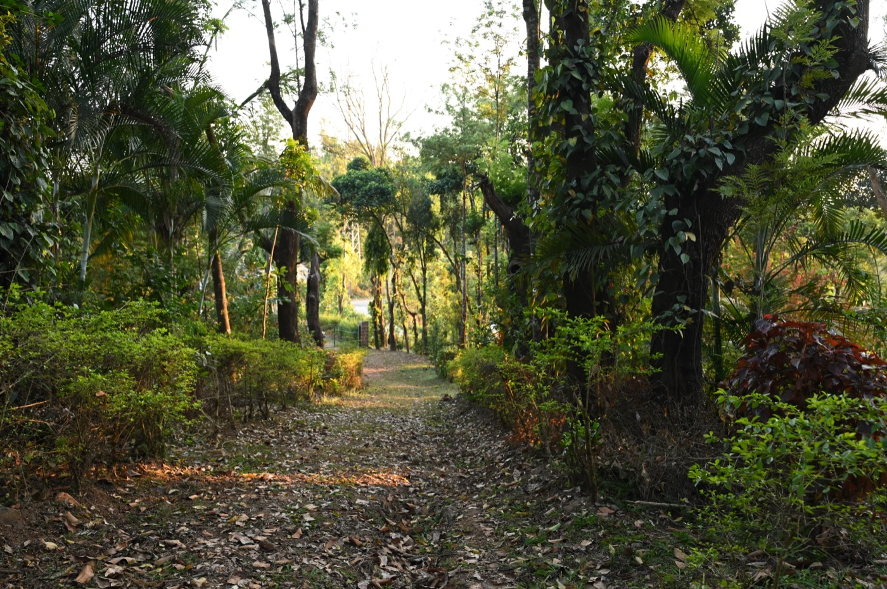
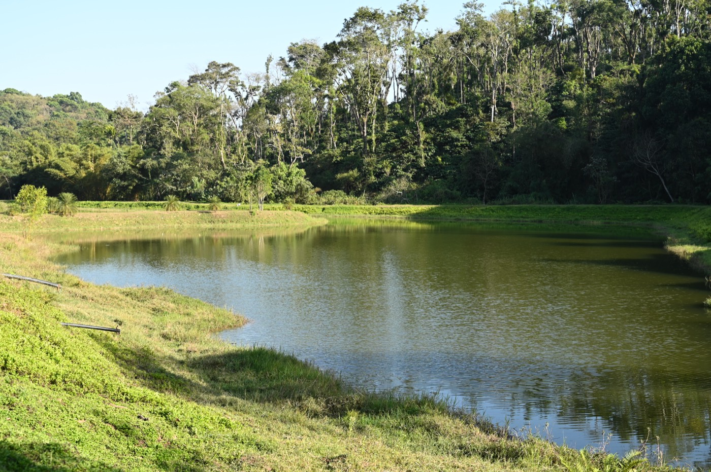
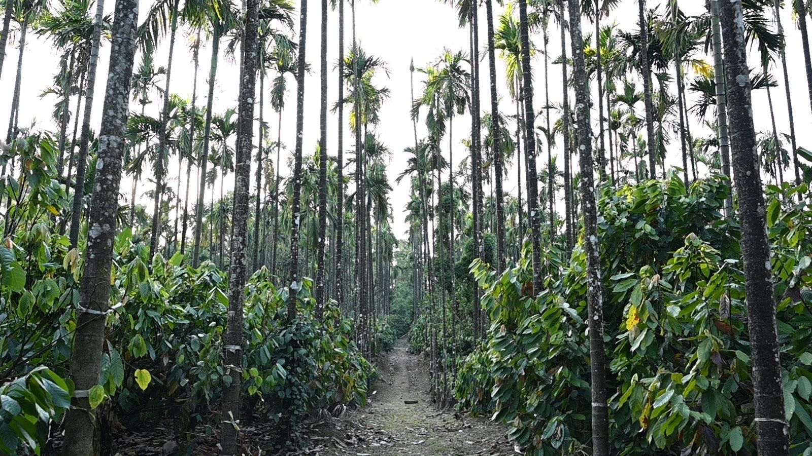
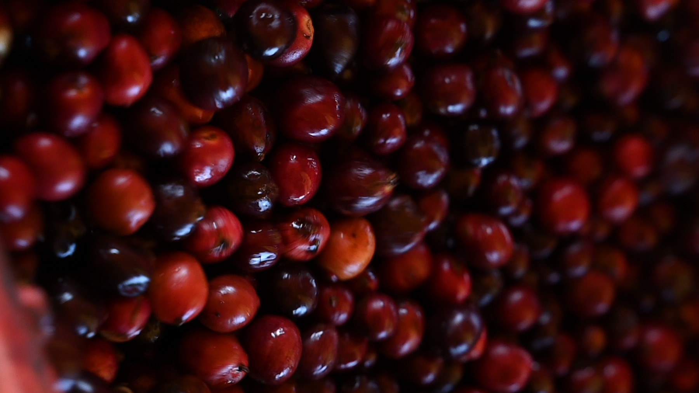
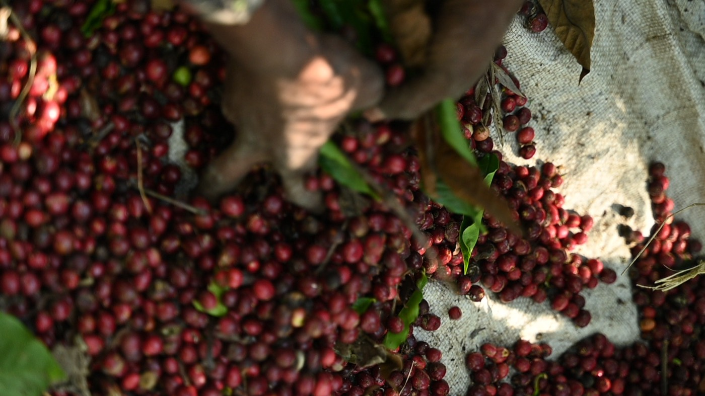
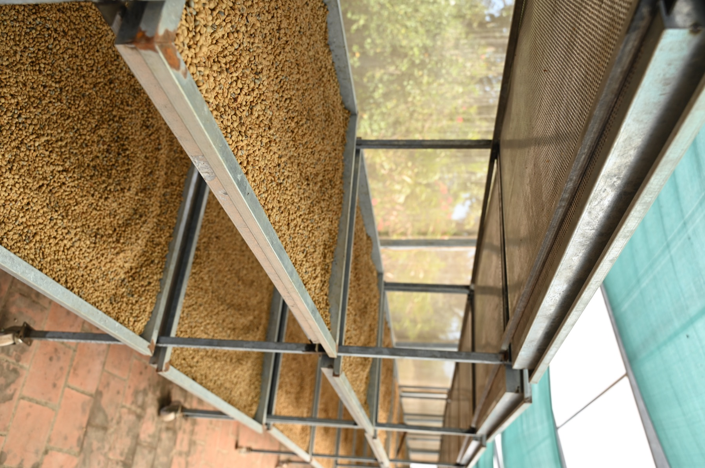
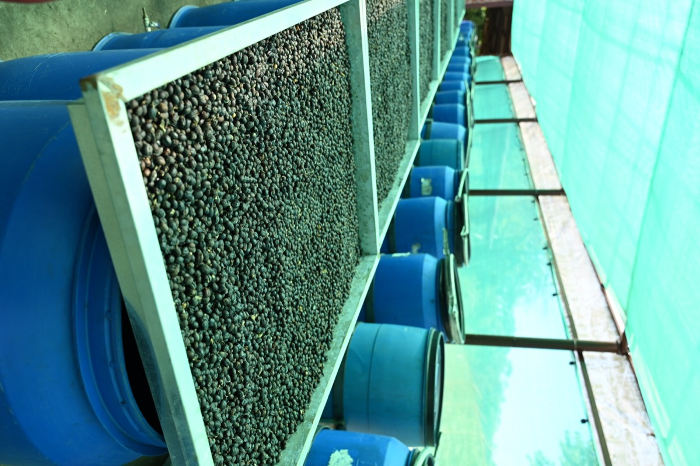
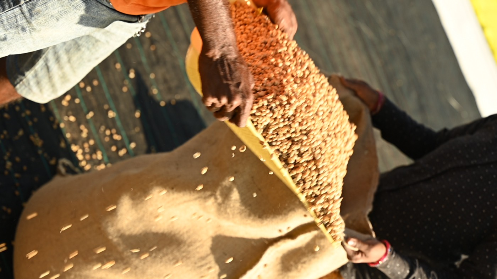
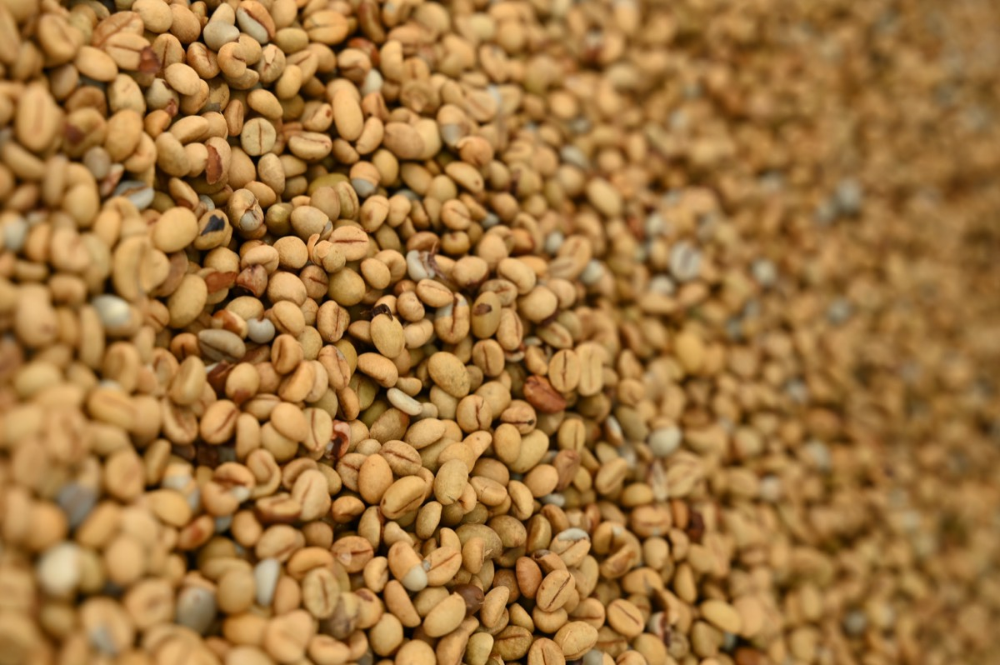

Harley Estate carries the feeling of an older coffee landscape. Commonly dated to around 1864, it is one of Karnataka’s historic plantations, set in the Manjarabad region of Sakleshpur in the Malnad hills. This part of the Western Ghats is defined by forest, heavy rainfall, waterfalls, and dense native vegetation, and the estate still reflects that relationship between coffee and the surrounding landscape.

Today, Harley is led by two sisters who are carrying that history forward in a very contemporary way. The estate combines traditional plantation knowledge with regular soil and leaf-tissue analysis, research-led decision making, and a strong conservation focus. Coffee grows under extensive shade alongside cocoa, banana, cardamom, pepper, and arecanut, while native forest and wildlife corridors remain part of the wider estate ecosystem.
That combination of heritage and modern agronomy is what makes Harley especially compelling. It does not feel like an estate preserved in the past. Instead, it feels like a place where history is still active, being adapted and carried forward through science, conservation, and thoughtful farming.
The coffees themselves reflect that same balance. Harley’s honey and fruit-forward processing work shows how distinctive profiles can be created without losing sight of the farm itself. One of the lots we were drawn to uses a banana-leaf-associated honey process, a coffee that immediately sparks curiosity but still asks to be judged first by the cup and by how clearly the process is documented.
For Kuyil, Harley is a story about continuity. About an old estate shaped by the Malnad landscape, led today by women, and moving forward through research and conservation rather than nostalgia.
The estate covers about 500 acres in the Manjarabad region of Sakleshpur, and it lies in a stretch of the Malnad hills surrounded by forest, waterfalls, and native vegetation. Both Arabica and Robusta grow here, under silver oak, fig, and jackfruit, with cocoa, banana, cardamom, pepper, and arecanut planted among them. The water used to wash and process the coffee comes from natural springs on the estate itself.
Harley is a fifth-generation estate. The two sisters who run it, Chandini and Tapaswini, are carrying the family name and legacy forward, and they are also taking it further forward.
The estate itself is beautiful. There is a little lake tucked away on the land, and elephants roam wild around it. Alongside coffee, they also grow cocoa.








For roasters, we share green coffees with full lot information and samples on request. For coffee drinkers, we offer a small roasted selection from the same estates.
Reach out for samples, inquiries,
or to start a conversation.
We've received your inquiry and will
be in touch shortly.